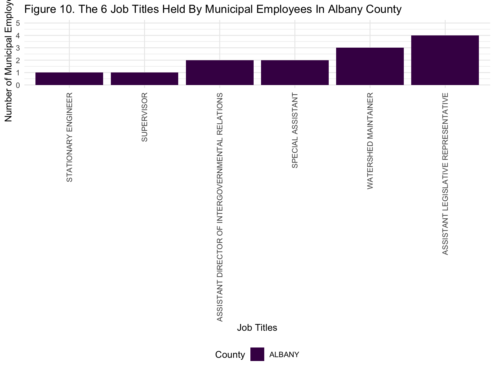

Final Report
library(tidyverse)
library(janitor)
library(viridis)
library(plotly)
library(ggplot2)
knitr::opts_chunk$set(
echo = TRUE,
warning = FALSE,
fig.width = 8,
fig.height = 6,
out.width = "90%"
)
options(
ggplot2.continuous.colour = "viridis",
ggplot2.continuous.fill = "viridis"
)
scale_colour_discrete = scale_colour_viridis_d
scale_fill_discrete = scale_fill_viridis_d
theme_set(theme_minimal() + theme(legend.position = "bottom"))payroll_data =
read_csv("data/payroll_data.csv")
Motivation
New York City (NYC) is recognized as having the largest regional economy in the United States (5). However, cities around the country suffered economic losses during the COVID-19 pandemic and the prospects of a recession are stirring fears of an uncertain economy. City managers are more cautious about fiscal spending compared to previous years in response to COVID-19. Our motivation is to use a dataset on NYC OpenData focused on the base salaries of municipal employees in New York State to better understand how the budget of several New York State counties are allocated toward salaries for the year 2022, two years after the COVID-19 pandemic began. We are interested in comprehending the mean base salaries of municipal employees for each county in New York State in 2022. As a result, we will perform statistical analysis through an ANOVA to determine if there is a significant difference in the mean base salary across all counties of New York State. If there is a significant difference, we would also like to know which counties exhibit a significant difference in the mean base salary of their municipal employees. We would also like to explore additional factors, such as the total other pay, overtime pay, the top job titles in certain counties, and the number of job titles by each county, within the data to see if they can explain the phenomenon that is observed with the base salaries of municipal employees.
Initial Questions
- How many municipal employees in the New York State counties were actively working, have stopped working, or were on leave at the end of the fiscal year for 2022?
- Which New York State county had the highest mean base salary?
- Were there any New York State counties who gave more overtime pay to their municipal employees than others?
- Were there any differences in the median base salary among the counties?
- Which county had the highest median base salary in terms of annual, daily, hourly, and prorated annual pay basis?
- Is there a significant difference in the mean base salary across all counties?
- What percentage of all municipal employees are actively working, have ceased working, or are on leave at the end of the fiscal year in 2022?
- Which counties have a significant difference in the mean base salary when compared to other counties?
During the course of our project, we decided to look at the job title variable. The new questions that we considered were:
- What were the top 10 job titles throughout the New York State counties and the number of employees for each of those job titles?
- What were the top 5 job titles in Kings county, Albany county, New York county, Richmond county, Bronx county, and Queens county?
- What were the top 10 jobs in New York County?
- Which job title had the highest frequency in Albany county?
Data
The data that was used for this project is from a NYC Open Data webpage link entitled “Citywide Payroll Data (Fiscal Year)”. It was collected with the purpose of understanding how New York City’s budget is utilized on salary and overtime pay for all municipal employees. However, it is important to note that the data contains information pertaining to municipal employees throughout various counties in New York State. This source of data is updated annually and was last updated on October 28, 2022.
The raw data consisted of 5,109,775 rows and 17 columns, which were fiscal year, payroll number, the name of the agency, last name of the employee, first name of the employee, middle initial of the employee, the date that the employee started working for the agency, the borough of the employee’s primary work location, the civil service title description, the leave status of the employee at the end of the fiscal year on June 30th, the base salary of the employee, pay basis, the number of regular hours that the employee worked in the fiscal year, the amount paid to the employee for base salary during the fiscal year, overtime hours worked by the employee during the fiscal year, the total overtime pay that was paid to the employee in the fiscal year, and total other pay. The borough of the employee’s primary work location variable are counties throughout New York State instead of just being the five boroughs in New York City. The pay basis is whether the employee was paid by hour, per diem, or annually. The total other pay variable is any financial compensation in addition to overtime pay and gross salary, which would include lump sums, meal allowance, settlement amounts, differentials, uniform allowance, retroactive pay increases, and bonus pay. This data does not show salary increases that are received during any one fiscal year.
The data was read into R as a .csv file using the “read_csv” function. All of the variable names were then changed to lowercase and an underscore was used between spaces by using the “clean_names” function. We then filtered the data to only include records from the fiscal year of 2022. We also filtered the data to remove records containing “NA”, “OTHER”, and “WASHINGTON DC” for the “work_location_borough” variable. In addition, we also filtered the data to remove records consisting of “ON SEPARATION LEAVE” and “SEASONAL” for the “leave_status_as_of_june_30” variable, and removed records containing “NA” for the “title_description” variable. The “agency_start_date” variable, which is the date that the employee started at the agency, was separated into three variables, “month”, “day”, and “start_year”. The variables “leave_status_as_of_june_30” and “work_location_borough” were duplicated and renamed into “leave_status” and “county_name”, respectively. The records containing “per Annum”, “per Day”, and “per Hour” for the pay basis variable were recoded into “Annually”, “Daily”, and “Hourly”, respectively. The records containing “MANHATTAN” and “BROOKLYN” for the county name variable were recoded into “New York” and “Kings”, respectively. The variables of payroll number, first name of the employee, last name of the employee, middle initial of the employee, month of the employee’s start date, day of the employee’s start date, the duplicated “leave_status_as_of_june_30”, the duplicated “work_location_borough”, the number of regular hours that the employee worked in the fiscal year, the amount paid to the employee for base salary during the fiscal year, and the overtime hours worked by the employee during the fiscal year were then removed from the data. The variables for county name, pay basis, and leave status were changed from a character data type to a factor. The variable for “title_description” was then duplicated and renamed into “job_title”. The duplicated “title_description” variable was then removed from the data. The data that was cleaned resulted in 594,234 records and 10 columns.
Exploratory Analysis
mean_base_salary_plot =
payroll_data %>%
group_by(county_name) %>%
summarize(
mean_base_salary = mean(base_salary, na.rm = TRUE)) %>%
ggplot(aes(x = reorder(county_name, mean_base_salary), y = mean_base_salary, fill = county_name)) +
geom_bar(position = "dodge", stat = "identity") +
scale_y_continuous(
labels = scales::comma,
limits = c(0, 110000),
breaks = seq(0, 110000, by = 27500)) +
labs(
x = "County Names",
y = "Mean Base Salary ($)",
title = "Figure 1. The Average Base Salary for Municipal Employees of New York State By County",
fill = "New York State County Names"
) +
theme(axis.text.x = element_text(angle = 80, vjust = 0.5, hjust = 0.50))
mean_base_salary_plotExploratory analysis for our primary outcome of whether there is a significant difference in the mean base salary of employees in New York State by county in 2022 was conducted by creating a bar graph (Figure 1). Figure 1 shows the average base salary for municipal employees of New York State by county. This figure illustrates that Albany county has the highest mean base salary for its municipal employees, while Nassau county has the lowest average base salary and New York county has the second lowest mean base salary. All of the other counties have similar average base salaries. However, we hypothesized that New York county would have the highest mean salary as it serves as a major financial center within the United States compared to Albany county, which is the capital of New York State.
number_job_titles_plot =
payroll_data %>%
group_by(county_name, job_title) %>%
summarise(count = n()) %>%
ungroup() %>%
group_by(county_name) %>%
summarise(count = n()) %>%
ggplot(aes(x = reorder(county_name, count), y = count, fill = county_name)) +
geom_bar(position = "dodge", stat = "identity") +
scale_y_continuous(
labels = scales::comma,
limits = c(0, 1500),
breaks = seq(0, 1500, by = 250)) +
labs(
x = "County Names",
y = "Number of Job Titles",
title = "Figure 2. The Number of Job Titles Held By Municipal Employees of New York State By County",
fill = "New York State County Names"
) +
theme(axis.text.x = element_text(angle = 90, vjust = 0.5, hjust = 1))
number_job_titles_plotWe investigated the number of job titles that are held by municipal employees in New York State by county in 2022 through a bar graph (Figure 2). Figure 2 conveys the number of job titles that are held by employees within each of the 16 counties in New York State. This figure demonstrates that Orange county has the lowest number of job titles, while Albany has the third lowest number of job titles. It is important to note that each of the five boroughs in New York City are among the counties that have the five highest counts of job titles that are held by municipal employees in 2022: New York county has the highest, which was expected; Queens county has the second highest number; Kings county has the third highest number; Bronx has the fourth highest number; Richmond has the fifth highest number. We did expect that New York county would have the highest number of job titles held by municipal employees and we also expected that the other boroughs of New York City would also have among the highest counts due to the large size of the populations within each of these counties within New York City. All of the other counties within New York State may have low frequencies of job titles that will be held by municipal workers in 2022, because of their smaller population sizes.
pay_basis_tibble =
payroll_data %>%
filter(pay_basis == "Annually") |>
group_by(county_name) %>%
summarise(median_base_salary = median(base_salary))
median_base_salary_plot_annually =
payroll_data %>%
filter(pay_basis == "Annually") |>
left_join(pay_basis_tibble, by = "county_name") %>%
ggplot(aes(x = reorder(county_name, median_base_salary), y = base_salary,
fill = county_name)) +
geom_boxplot() +
scale_y_continuous(
labels = scales::comma,
limits = c(20000, 150000),
breaks = seq(20000, 150000, by = 15000)) +
labs(
x = "County Names",
y = " Base Salary ($)",
title = "Figure 3. Base Salary For Annually-Paid Municipal Employees For Each New York State County",
fill = "New York State County Names"
) + theme(axis.text.x = element_text(angle = 90, vjust = 0.5, hjust = 1))
median_base_salary_plot_annually
Figure 3 shows the base salary for municipal employees that are paid annually in New York State by county. According to this figure , Orange county has the lowest median base salary around 60,000 dollars for its municipal employees, whereas Albany has the highest median base salary of about 80,000 dollars followed by New York county. Compared to the mean base salary, the median base salary in New York was similar to Albany.
pay_basis_daily_tibble =
payroll_data %>%
filter(pay_basis == "Daily") |>
group_by(county_name) |>
summarise(median_base_salary_daily = median(base_salary))
median_base_salary_plot_daily =
payroll_data %>%
filter(pay_basis == "Daily") |>
left_join(pay_basis_daily_tibble, by = "county_name") %>%
ggplot(aes(x = reorder(county_name, median_base_salary_daily) ,
y = base_salary, fill = county_name)) +
geom_boxplot() +
scale_y_continuous(
labels = scales::comma,
limits = c(0,650),
breaks = seq(0, 650, by = 50)) +
labs(
x = "County Names",
y = " Base Salary ($)",
title = "Figure 4. Base Salary For Daily-Paid Municipal Employees For Each New York State County",
fill = "New York State County Names"
) + theme(axis.text.x = element_text(angle = 90, vjust = 0.5, hjust = 1))
median_base_salary_plot_daily
Figure 4 shows the median base salary for municipal employees that are paid daily in New York State by county. The daily median base salary ranged from 25 to 625 dollars. This figure illustrates that New York county had the lowest daily median base salary of about 25 dollars. Albany, Dutchness, and Greene county had the highest daily median base salary at about 500 dollars. The rest of the counties placed in between the aforementioned values. It is important to note that the daily base salary for New York County had many outliers indicating that the range of the daily base salary varied greatly.
pay_basis_hourly_tibble =
payroll_data %>%
filter(pay_basis == "Hourly") |>
group_by(county_name) %>%
summarise(median_base_salary_hourly = median(base_salary))
median_base_salary_plot_hourly =
payroll_data %>%
filter(pay_basis == "Hourly") |>
left_join(pay_basis_hourly_tibble, by = "county_name") %>%
ggplot(aes(x = reorder(county_name, median_base_salary_hourly),
y = base_salary, fill = county_name)) +
geom_boxplot() +
scale_y_continuous(
labels = scales::comma,
limits = c(0,95),
breaks = seq(0,95, by = 10)) +
labs(
x = "County Names",
y = " Base Salary ($)",
title = "Figure 5. Base Salary For Hourly-Paid Municipal Employees For Each New York State County",
fill = "New York State County Names"
) + theme(axis.text.x = element_text(angle = 90, vjust = 0.5, hjust = 1))
median_base_salary_plot_hourlyFigure 5 illustrates the median base salary for municipal employees that were paid hourly in New York State by county. The hourly median salary ranged between 0 to 95 dollars. New York County has the lowest hourly median base salary at about 0 dollars and has the most outliers. Nassau county has the highest hourly median base salary around 65 dollars. This shows that highly populated counties have lower hourly median base salaries compared to less populated counties.
pay_basis_prorated_tibble =
payroll_data %>%
filter(pay_basis == "Prorated Annual") |>
group_by(county_name) %>%
summarise(median_base_salary_prorated = median(base_salary))
median_base_salary_plot_prorated =
payroll_data %>%
filter(pay_basis == "Prorated Annual") |>
left_join(pay_basis_prorated_tibble, by = "county_name") %>%
ggplot(aes(x = reorder(county_name, median_base_salary_prorated),
y = base_salary, fill = county_name)) +
geom_boxplot() +
scale_y_continuous(
labels = scales::comma,
limits = c(10000,80000),
breaks = seq(10000, 80000, by = 10000)) +
labs(
x = "County Names",
y = " Base Salary ($)",
title = "Figure 6. Base Salary For Prorated-Annually-Paid Municipal Employees For Each New York State County",
fill = "New York State County Names"
) + theme(axis.text.x = element_text(angle = 90, vjust = 0.5, hjust = 1))
median_base_salary_plot_proratedFigure 6 displays the median base salary for municipal employees that are prorated annually in New York State by county. The county with the highest median base salary that is prorated annually was Ulster county at about 50,000 dollars followed by New York county. The counties with the lowest median base salary that was prorated annually were Bronx, Richmond, Westchester, Kings, and Queens counties at around 35,000 dollars.
job_frequency =
payroll_data %>%
group_by(county_name, job_title) %>%
summarise(job_frequency = n()) %>%
arrange(desc(job_frequency)) %>%
ungroup()
job_frequency_data =
job_frequency %>%
top_n(job_frequency, n = 10) %>%
mutate(
job_title = recode(job_title, "TEACHER- PER SESSION" = "TEACHER PER SESSION"),
job_title = recode(job_title, "ANNUAL ED PARA" = "EDUCATION PARAPROFESSIONAL"),
job_title = recode(job_title, "TEACHER SPECIAL EDUCATION" = "SPECIAL EDUCATION TEACHER"),
job_title = recode(job_title, "TEACHER-GENERAL ED" = "GENERAL EDUCATION TEACHER"),
job_title = recode(job_title, "SUBSTITUTE ED PARA" = "SUBSTITUTE EDUCATION PARAPROFESSIONAL"),
job_title = recode(job_title, "F/T SCHOOL AIDE" = "SCHOOL AIDE"))
job_frequency_plot =
job_frequency_data %>%
ggplot(aes(x = reorder(job_title, job_frequency), y = job_frequency, fill = county_name)) +
geom_bar(position = "dodge", stat = "identity") +
scale_y_continuous(
labels = scales::comma,
limits = c(0, 120000),
breaks = seq(0, 120000, by = 10000)) +
labs(
x = "Job Titles",
y = "Number of Municipal Employees",
title = "Figure 7. The Top 10 Job Titles Held By Municipal Employees Throughout the Counties in New York State",
fill = "New York State County Names"
) +
theme(axis.text.x = element_text(angle = 90, vjust = 0.5, hjust = 1))
job_frequency_plot
Furthermore, an exploratory analysis was conducted to comprehend the top ten job titles that are held by municipal workers throughout the counties in New York State in 2022 through a bar graph (Figure 7). Based on Figure 7, the top ten job titles by frequency are Correction Officer, School Aide, Police Officer, Substitute Education Paraprofessional, General Education Teacher, Special Education Teacher, Education Paraprofessional, Election Worker, Teacher, and Teacher Per Session, respectively in ascending order. The top 9 job titles by frequency were in New York county with Teacher Per Session being the job title with the highest frequency. The job title with the 10th highest frequency was in Queens county and was a Correction Officer. We did predict that one of the teacher job titles would be the job title with the highest frequency, but we did not expect that it would be the Teacher Per Session job title. We also expected that all of the top 10 job titles with the highest frequencies would be in New York County. Overall, this figure supports some of our predictions and illustrates that the job title with the highest frequency in Queens is a Correction Officer.
top5_freq =
payroll_data %>%
filter(county_name %in% c("NEW YORK", "KINGS", "BRONX", "QUEENS", "RICHMOND","ALBANY")) %>%
group_by(county_name, job_title) %>%
summarise(number_of_people = n()) %>%
arrange(desc(number_of_people)) %>%
slice(1:5)
top5_freq_n =
top5_freq %>%
mutate(
job_title = as.factor(job_title),
job_title = recode(job_title, "TEACHER- PER SESSION" = "TEACHER PER SESSION"),
job_title = recode(job_title, "ANNUAL ED PARA" = "EDUCATION PARAPROFESSIONAL"),
job_title = recode(job_title, "TEACHER SPECIAL EDUCATION" = "SPECIAL EDUCATION TEACHER"),
job_title = recode(job_title, "ASST DIR OF INTERGVNMENTAL RELTNS FOR THE ALBANY OFFICE" = "ASSISTANT DIRECTOR OF INTERNATIONAL RELATIONS"),
job_title = recode(job_title, "EMERGENCY MEDICAL SPECIALIST-EMT" = "EMT"))
top_plot =
ggplot(top5_freq_n, aes(x = reorder(job_title, number_of_people), y = number_of_people)) + geom_point(aes(color = county_name), alpha = 0.5) +
scale_y_continuous(
labels = scales::comma,
limits = c(0,120000),
breaks = seq(0, 120000, by = 15000)) +
labs(title = "Figure 8. The Top Five Job Titles Held by Municipal Employees in Six New York State Counties",x = "Job Title", y = "Number of Municipal Employees") +
guides(color = guide_legend(title = "New York State County Names")) +
theme(axis.text.x = element_text(angle = 90, vjust = 0.5, hjust = 1))
top_plot
Since we are based in New York City, we decided to look at the top 5 job titles for each of the counties for the 5 boroughs in NYC and compare them with the top 5 job titles in Albany county because Albany has the highest mean base salary. We chose Richmond county, Bronx county, Kings county, Queens county, and New York county as they all represent boroughs of New York City, which is one of the largest financial epicenters. These counties were also chosen because they had the highest number of job titles. We conducted a scatterplot to see the top 5 job titles within each of the aforementioned counties. Looking at the plot, one can observe that in New York county, the number of Teachers per Session was 113,882 meaning that New York County has the highest number of teachers per session among the six counties. Queens county had the highest number of correction officers, 7,708. For Bronx county, their highest job title was a Police Officer, 3,807. However, Kings county had the most Police Officers as they had 5,815. Albany county had the most number of Assistant Legislative Representatives, which was 4.
job_frequency_newyork =
payroll_data %>%
filter(county_name == "NEW YORK") |>
group_by(county_name, job_title) %>%
summarise(job_frequency = n()) %>%
arrange(desc(job_frequency)) %>%
ungroup()
job_frequency_newyork_data =
job_frequency_newyork %>%
top_n(job_frequency, n = 10) %>%
mutate(
job_title = recode(job_title, "TEACHER- PER SESSION" = "TEACHER PER SESSION"),
job_title = recode(job_title, "ANNUAL ED PARA" = "EDUCATION PARAPROFESSIONAL"),
job_title = recode(job_title, "TEACHER SPECIAL EDUCATION" = "SPECIAL EDUCATION TEACHER"),
job_title = recode(job_title, "TEACHER-GENERAL ED" = "GENERAL EDUCATION TEACHER"),
job_title = recode(job_title, "SUBSTITUTE ED PARA" = "SUBSTITUTE EDUCATION PARAPROFESSIONAL"),
job_title = recode(job_title, "F/T SCHOOL AIDE" = "SCHOOL AIDE"))
job_frequency_newyork_plot =
job_frequency_newyork_data %>%
ggplot(aes(x = reorder(job_title, job_frequency), y = job_frequency, fill = county_name)) +
geom_bar(position = "dodge", stat = "identity") +
scale_y_continuous(
labels = scales::comma,
limits = c(0, 120000),
breaks = seq(0, 120000, by = 20000)) +
labs(
x = "Job Titles",
y = "Number of Municipal Employees",
fill = "County",
title = "Figure 9. The Top 10 Job Titles Held By Municipal Employees in New York County") +
theme(axis.text.x = element_text(angle = 90, vjust = 0.5, hjust = 1))
job_frequency_newyork_plot
job_frequency_albany =
payroll_data %>%
filter(county_name == "ALBANY") |>
group_by(county_name, job_title) %>%
summarise(job_frequency = n()) %>%
arrange(desc(job_frequency)) %>%
ungroup()
job_frequency_albany_data =
job_frequency_albany %>%
top_n(job_frequency, n = 10) %>%
mutate(
job_title = recode(job_title, "ASST DIR OF INTERGVNMENTAL RELTNS FOR THE ALBANY OFFICE" = "ASSISTANT DIRECTOR OF INTERGOVERNMENTAL RELATIONS"))
job_frequency_albany_plot =
job_frequency_albany_data %>%
ggplot(aes(x = reorder(job_title, job_frequency), y = job_frequency, fill = county_name)) +
geom_bar(position = "dodge", stat = "identity") +
scale_y_continuous(
labels = scales::comma,
limits = c(0, 5),
breaks = seq(0, 5, by = 1)) +
labs(
x = "Job Titles",
y = "Number of Municipal Employees",
fill = "County",
title = "Figure 10. The 6 Job Titles Held By Municipal Employees In Albany County") +
theme(axis.text.x = element_text(angle = 90, vjust = 0.5, hjust = 1))
job_frequency_albany_plot The top job titles for New York county and Albany county were illustrated through barplots. Based on Figures 9 and 10, the top ten job titles in New York County are Community Associate, School Aide, Police Officer, Substitute Education Paraprofessional, General Education Teacher, Special Education Teacher, Education Paraprofessional, Election Worker, Teacher, and Teacher Per Session. The job title with the highest number of employees in New York county is Teacher per Session, while the job title with the lowest number of employees is Community Associate. The top six job titles in Albany County are Assistant Legislative Representative, Watershed Maintainer, Special Assistant, Assistant Director of Intergovernmental Relations, Supervisor, Stationary Engineer. The job title with the highest number of employees in Albany county is Assistant Legislative Representative, while the job title with the lowest number of employees is Stationary Engineer.
overtime_tibble =
payroll_data %>%
group_by(county_name) %>%
summarise(median_total_ot_paid = median(total_ot_paid))
median_ot_paid_plot =
payroll_data |>
left_join(overtime_tibble, by = "county_name") |>
ggplot(aes(x = reorder(county_name, median_total_ot_paid), y = total_ot_paid,
fill = county_name)) +
geom_boxplot() +
scale_y_continuous(
labels = scales::comma,
limits = c(-5000, 27500),
breaks = seq(-5000, 27500, by = 7500)) +
labs(
x = "County Names",
y = "Total Overtime Paid ($)",
title = "Figure 11. Total Overtime Paid By Each County in New York State",
fill = "New York State County Names"
) +
theme(axis.text.x = element_text(angle = 90, vjust = 0.5, hjust = 1))
median_ot_paid_plotThis boxplot shows the median total overtime pay for municipal employees in New York State by its counties in 2022. Figure 11 illustrates that New York county was among the counties with the lowest median total overtime pay along with Albany, Nassau, and Orange counties at around 1,000 dollars. The county with the highest median total overtime pay is Greene county at around 7,500 dollars. In addition, it was noticeable that New York county has the greatest number of outliers, which may be due to the large population within this county, whereas Greene, Orange and Dutchess counties did have outliers.
median_tibble =
payroll_data %>%
group_by(county_name) %>%
summarise(median_total_other_pay = median(total_other_pay))
median_other_pay_plot =
payroll_data %>%
left_join(median_tibble, by = "county_name") %>%
ggplot(aes(x = reorder(county_name, median_total_other_pay), y = total_other_pay, fill = county_name)) +
geom_boxplot() +
scale_y_continuous(
labels = scales::comma,
limits = c(-20000, 40000),
breaks = seq(-20000, 40000, by = 10000)) +
labs(
x = "County Names",
y = "Total for Other Pay ($)",
title = "Figure 12. The Total Other Pay for Municipal Employees of New York State By County",
fill = "New York State County Names"
) +
theme(axis.text.x = element_text(angle = 90, vjust = 0.5, hjust = 0.5))
median_other_pay_plotAn exploratory analysis was performed to understand the median total other pay for municipal employees throughout New York State by county in 2022 through a boxplot (Figure 12). Figure 12 demonstrates that New York county has the lowest median for total other pay, which is relatively close to 0 dollars, while Schoharie county has the highest median for total other pay, which is relatively above 5000 dollars for municipal workers. We did not expect New York county to have the lowest median for total other pay, but instead be one of the counties with the highest median for total other pay due to the large population and number of job titles within this county (Figure 2). All of the other counties have relatively similar medians for total other pay in 2022. It is also important to note that New York county has the greatest number of outliers, which may be due to the large population within this county. Based on figure 12, Queens, Bronx, and Kings counties also have high numbers of outliers, which may also be due to the large populations within these counties. There are counties that do not have any outliers, such as Sullivan, Delaware, Greene, and Orange counties. This figure also illustrates that there are employees in some of the counties that have negative values for other types of pay, which can include lump sums, meal allowance, settlement amounts, differentials, uniform allowance, retroactive pay increases, and bonus pay. These other forms of payment would explain why there are negative values for this variable.
Ls_bar =
payroll_data %>%
group_by(leave_status) %>%
summarise(
count = n()
)
ggplot(Ls_bar, aes(x = leave_status, y = count, fill = leave_status)) +
geom_bar(position = "dodge", stat = "identity") +
labs(
title = "Figure 13. The Number of Municipal Employees by Leave Status in New York State",
x = "Leave Status",
y = "Number of Municipal Employees",
fill = "Leave Status"
) +
scale_y_continuous(labels = scales::comma)
We also created a bar graph to show the distribution of leave status. In 2022, there were a total of 594,234 municipal employees across New York state counties. The graph shows that 481,781 municipal employees had a leave status that was active and 102,360 employees had a leave status that was ceased. The remaining number of municipal employees, 10,093, were on leave.
Total_ls = table(pull(payroll_data,leave_status))
labels = c("Active", "Ceased", "On Leave")
piepercent = round(100 * Total_ls / sum(Total_ls), 1)
par(xpd = TRUE)
pie(Total_ls, labels = paste(labels, sep = " ", piepercent, "%"),
main = "Figure 14. Percentages of Municipal Employees by Leave Status Across All Counties", col = viridis(length(Total_ls)))
legend("topright", c("Active", "Ceased", "On Leave"),cex = 1.1, fill = viridis(length(Total_ls))) We also wanted to look at the leave status to know how many municipal
employees were actively working, had stopped working or were on leave.
We constructed a pie chart which shows the percentages of leave status
for all municipal employees in New York State in 2022. We assumed that
the majority of the municipal employees across all New York state
counties would have a leave status that was active. 81.1% of the
municipal employees were actively working, which was to be expected.
17.2 % of employees have stopped working at their municipal jobs and
1.7% of municipal employees were on leave.
We also wanted to look at the leave status to know how many municipal
employees were actively working, had stopped working or were on leave.
We constructed a pie chart which shows the percentages of leave status
for all municipal employees in New York State in 2022. We assumed that
the majority of the municipal employees across all New York state
counties would have a leave status that was active. 81.1% of the
municipal employees were actively working, which was to be expected.
17.2 % of employees have stopped working at their municipal jobs and
1.7% of municipal employees were on leave.
Additional Analysis
For additional analysis, an ANOVA was done to determine whether there is a significant difference in mean base salary for municipal workers between the counties in New York State in 2022. The null hypothesis is that all the base salary means for each county are equal. The alternative hypothesis is that not all the base salary means for each county are equal. The significance level for this test is 0.05. The p-value for this test is 0 (Table 1). Since the p-value = 0 < 0.05, we reject the null hypothesis that all the base salary means for each county are equal. There is sufficient evidence in this data to support the claim that not all of the base salary means for each county are equal at the 5 % significance level.
Since the ANOVA test does not indicate which base salary means are different and we need to control and preserve the overall family-wise error rate at the pre-specified alpha level of 0.05, we conducted a Tukey’s test. Based on Table 2, the following county comparisons have significant differences in mean salary for municipal workers in 2022 as the p-values are less than 0.05 and the null value of 0 is not included within the corresponding confidence interval: Bronx and Albany, Nassau and Albany, New York and Albany, Richmond and Albany, Kings and Bronx, New York and Bronx, Queens and Bronx, Richmond and Bronx, Sullivan and Bronx, Ulster and Bronx, Westchester and Bronx, Nassau and Delaware, New York and Delaware, Nassau and Kings, New York and Kings, Richmond and Kings, Ulster and Kings, Westchester and Kings, Queens and Nassau, Richmond and Nassau, Sullivan and Nassau, Ulster and Nassau, Westchester and Nassau, Queens and New York, Richmond and New York, Sullivan and New York, Ulster and New York, Westchester and New York, Ulster and Queens, Westchester and Queens, Ulster and Richmond, and Westchester and Richmond.
Discussions
In our exploratory analysis, we looked at leave status, base salary, overtime pay, job titles, total other pay, and base salary by pay basis across New York State counties in 2022. Before calculating the percentages and numbers of leave-status employees for all 16 counties, we predicted that most municipal employees had an active leave status. This prediction was correct as most of the 594,234 employees were actively working. The majority of the remaining number of employees were ceased and very few were on leave.
When looking at the mean salary of municipal employees in New York State counties, we found it interesting that Albany had the highest mean base salary. We identified a notable difference in the average base salary between the counties of New York and Albany. It was interesting that the average base salary in New York county was low compared to the majority of the New York State counties because it is known as a financial hub in the United States.
Since Albany had the highest mean base salary, we decided to look at the job titles across all 16 counties in New York. We also expected New York county to have the most job titles due to its large population. When looking at the number of job titles in New York State counties, New York county, Queens county, Kings county, Bronx county, had the top four highest number of job titles, respectively. We found it interesting that Albany county had the third lowest number of job titles meaning that the variability of jobs is low.
We also looked at the top 5 job titles in Bronx, Kings, Queens, New York, and Albany counties. The most prominent job titles were Correction Officer, Assistant Legislative Representative, and Teachers per Session. It was interesting that Albany had the fewest job titles, 6, even though Albany had the highest mean base salary. Overall, this information illustrates that certain job titles that pay higher base salaries can skew the data even though there are very few people with these job titles.
We also looked at the median total other pay for municipal employees across all of the New York State counties in 2022. We found out that New York county had the lowest median total other pay, while Schoharie county had the highest with approximately more than five thousand dollars for municipal employees. We did not expect this result and believed New York county would have the highest median for the total other pay. It is essential to acknowledge that New York county had numerous outliers, which could have been possibly due to its large population. Other counties that had many outliers were Queens, Bronx, and Kings.
In addition to looking at the mean base salary, we also looked at the median base salary for employees that are paid annually, daily, hourly, and prorated annually. Albany had the highest median base salary for those that were paid annually followed by New York county. As for those that were paid daily, Albany, Dutchess, and Greene counties had the highest median base salary. Nassau county had the highest hourly median base salary. Ulster county had the highest median base salary for those that prorated annually, followed by New York county.
We also investigated which county had the highest median overtime pay for municipal employees in New York State. New York county had the lowest median total overtime pay while Greene county had the highest. We found this interesting because Greene county’s small population may result in higher overtime pay while the large population in New York county may result in the opposite as more people would want to engage in overtime opportunities.
In our statistical analysis, specifically the ANOVA test, we hypothesized that there is a significant difference between the means of base salary for the New York State counties. This hypothesis was proven to be true as the p value was zero, which supported the rejection of the null hypothesis that there was no difference in the mean base salary among the counties. We also predicted that there would be significant differences in the mean base salary between the counties. With the Tukey test, we saw that there were many significant differences in the mean base salary when comparing the counties among one another. Some significant differences were: New York and Albany, Kings and Bronx, New York and Bronx, Richmond and Kings, and Queens and Bronx. Ultimately, we saw that most of the significant differences were between NYC’s 5 boroughs and Albany as their p values were less than 0.05.
Work Cited:
- (https://www.route-fifty.com/finance/2022/10/cities-recover-financial-worries-loom/378358/)
- https://www.bls.gov/regions/new-york-new-jersey/news-release/countyemploymentandwages_newyorkcity.htm
- https://www.osc.state.ny.us/reports/state-fiscal-year-2022-23-enacted-budget-analysis
- https://ballotpedia.org/New_York_state_budget_and_finances
- https://en.wikipedia.org/wiki/Economy_of_New_York_City
- https://www.bls.gov/news.release/pdf/wkyeng.pdf